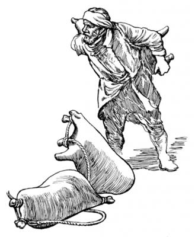

Yesusti lebe arop kom nimi wali nembaogha
(Matius 9:1-8; Lukas 5:17-26)
2
1 Ae ik etbare Yesus undo wamogha nen samoro as Kapernaum yaogpa, “Yesus wene samoro aeag yal,” aro yubu sabo taogpa, nimi maikno ka'ebaek. 2 Ka'ebaekti, yalamekti, aeag babe nimi aghabog teknebaek. Teknebaekti, ina siramag babe asag sip nimi to'opto longolaekpa, kolo orog taog. Undo wamekpa, Yesusti sinag Allah yubu ambarelamsiog. 3 Ambarelamsiogpa, wamekag aneko nengabo tombareri lebe arop kom nimi nhon morea kalag keyapto, “Yesusag payaukap,” aro ulamek. 4 Payalamekti, kemelamekpa, nimi maikno longolaekne sembe Yesus peramag wa'inep kom. Wa'inep kom, ane sembe sikin imag alibag waelbaekti, Yesus wamogha alibag imag kwerekaekti, sikindi poneko morea kalap haingdi kerekto ae lomag pelengkaek. Nimi tombare anekori ae imag sabongeag waelbaekti, “Yesus whingag nembabeba, wali nembalultiog” senenneag agha ae imag kwerekaek. (Mrk. 2:4)
6-7 Wene seogpa, nubunang Musari aruksirop yubu amohirop nang etpare pukamekne tanekori Yesus yubu ka'ebaekti, sindi wanaag mali senelamek. Senelamekti, “Sa'a sembe nimi ane, ‘Andi mali-malia uaomne kom nemban,’ alamla? Nimiri mali-malia uropne nimi nhondi babe kom nembanep kom. Eldi, ‘Mali-malia uaomne kom nemban,’ aro leplangena, Ot Allah Eldamneriog lemnep. Nimi eneri Allah san lepla,” aro wanaag seneraglamek.
8 Wene aro sindi wanaag seneraglamekne Yesus peket el taogti, ambarelamsiogti, “A'undi wanaag ‘Lepso kom,’ senelamlomne nene sa'ambe seneraglamlom? 9 Mog so'oag nimiri nimiag, ‘Andi malia uaomne tam orog tal,’ seheng tanena, mali-malia aneko sik uro tam kom tanep te? Mog so'oag nimiri lebe arop kom nimi enekoag, ‘Seke! Andi morea kalap salero pululam,’ aro yubu ambatseng tanena, sik uro yabinep te? Ni yubu phende abeneko mog so'oag nimiri mo yubu lepseng tanena, nhon babe uro yabinep te? 10 Aghana a'undi Na sembe el tahom senelamnari, lag nembanun. Na mog so'oag nimi tahinge saeag Allahri mikipne pibog andarina, nimiri mali-malia uropne sembe nari tam orog nembanep. Kembamundi el talulom,” seogti, lebe arop kom nimi enekoag yubu lelamogti, 11 “Anag lemnuan. Seke! Andi morea kal saelba andi aeag palame!” seog.
12 Wene seogpa, nimi ni taneko tiboglamekpa, lebe arop kom nimi enekori sekom agha morea kal aneko tobogti, lambaog. Lambaogpa, nimi niri ponekoag tibogaekti, “Yaghe, ane mane agha ual! Tam undopne nu olog irop komne uro yabil,” aro lo'om seekti, Allah omeklamek.
Yesusti Lewiag, “An nanag neleplamnululam!” aro yobogha
(Matius 9:9-13; Lukas 5:27-32)
13 As Kapernaum laplobi agha Yesus samoro mag Galilea sin peramag piog. Piogpa, nimi maikno elag yalamekpa, Allah yubu ambarelamsiog. 14 Ambattoa yabalamsiogti, nimi nhon sina Lewi, Alfeus elme tilamog. Lewi poneko Kapernaum mog so'o saelba uhiropnang yubu eptopne wamog. Kapernaum nimiri awe tolamekti, kal ma'al kamna tolamekpa, Lewi ponekori sinag aruklamsiognena, “Kal ma'al tolamlomne agha saelba uhiropnang sembe pogto nanag palilamlulom,” aro aruklamsiog. Aruklamsiogpa, payalamekpa, kal ma'al tipto iliyabo saeag tarelamsiog. Lewi poneko awe torop aeag pukamogpa, Yesus yabalamogti, Lewi pukamogha ibog. Yesusti Lewiag, “Anna nanag neleplamnululam,” seogpa, Lewi sekom agha Yesus neleplamog. 15 Nelebaogpa, Yesusap Lewiri aeag piekti, kwaneng telamek. Lewiri aeag kwaneng telamek nimina, Lewi elkabo saelba uhiropnangdi yubu eptopnang “Kal ma'al paya,” aro aruksiropnang maikno babe wamek. Ora nimi sin sembe nimiri, “Sikin malia ulamang,” senehirop nimi babe, Lewiri aeag yaekti, Yesus yubu ka'ero neleptopnangap kwaneng nhon telamek. Lewi elkabo anabiag agha maiknori Yesus neleplamek ane sembe, sin babe Yesus nelepto kwaneng telamek. 16 Kwaneng telamekpa, Farisi nimi Musari samenag mome tobog yubu ambatsirop nimi taneko wamek. Wamekti, Yesusap nimi tanekoapti kwaneng nikag telameka tibogahiek. Yesus tibogaekti, Farisi nimi tanekori Yesusti yubu ka'ero neleptopnangag hailamsiekti, “Sa'a sembe Yesusap, sin Roma nimi sembe kal ma'al poloro toropnangap, mali-malia urop nimi yogneap kwaneng nikag telamang?” aro haibahiek.
17 Haibahiekpa, Yesus ka'ebaogti, samoro ambarelamsiogti, “Nong wali nimiri wehesirop nimi sembe yepneho senelamang kom. Ot niktop nimiri aghabog wehesirop nimi sembe yepneho senelamang. Ane saog uro, na so'oag ‘Yepsinun’ aro yahingena, nimiri eldamne sembe, ‘Na malia urop nimi,’ aro el tahoba, nimi neneko, ‘Yopto yepsinun,’ aro yahi. Ora nimiri eldamne sembe, ‘Na malia uan koma ulamna,’ seneptaho tanena, nimi eneko yopto yepsinun kom,” seog.
Nimiri “Allahag moloro omeklamnun,” aro kwaneng ten koma uropne sembe Yesusti tibin nembaogha
(Matius 9:14-17; Lukas 5:33-39)
18 Yohanesti yubu ka'ero neleptopnangap Farisinangap sin tanekori, “Allahag moloro omeklamukap,” aro kwaneng ten koma omekto ulamek. Undo ulamekpa, nimi etpare Yesusag yaekti, hailamekti, “Sa'a sembe Yohanesti yubu ka'ero neleptopnangap Farisinangap sin nimi tanekori, ‘Allah omeklamukap,’ aro kwaneng ten koma ulamang aghana, andi yubu ka'ero neleptopnang tanekori kwaneng telamang?” aro hailamek. 19 Yesusti samoro ambarelamsiogti, “Na so'oag wamnaag abenena, nanag neleptopnang kwaneng tero kom-kom wamseng kom. Sunumna ambatsinun. Nimi nhondi kel torop tanena, elkaboap ma'ap tahengdi, kwaneng telamseng te? Kel torop nimi tanekoap, elkaboap kel torop sum eneko elenge nimi paliap wamangne sembe kwaneng tero kom-kom wamang kom. Ane saog uro nanap, na neleptopnangap nimi pali wamapti, nu nikag wamapne abeneko nu kwaneng ten koma wamnep kom. 20 Aghana ik nhon sum kel toropne poneko nimiri salero pabik tanena, elkabo kwaneng ten koma wamukang. Ane saog uro na amik sum wamne kom tanena, nari yubu ka'ero neleptopnang kwaneng ten koma wamukang,” seog.
21 Seogti, sunumna nhon babe ambarelamsiogti, “Ag samenag wirop ag wamsoba, ag eneko tilipto yabiho tanena, ag wiroba wendogne taebom agha nimiri ag samenne wetnelamang kom. Ag wendogne taebom agha leknero wetnebaheng tanena, wiroba wendogne nene samenne agha pulukto koloptanep. Undop agha ag samenne eneko taepto tinilamnari lom nubu tanep. 22 Nen sunumna nhon ambatsinun. Nimi nhondi anggur wana lolterop mag topsori, mag tero lina pham kambing kon agha wetnerop ag mag nene tero lirop. Anggur wana weneog lolterop mag tero lirop tanena, pham kambing kon agha wetnerop ag samenne ag tero lirop kom. Anggur lolterop mag neneko kon agha wetnerop ag tero lirop tanena, anggur mag nene agha ibya lanalamlori, kon agha wetnerop ag eneko nubu nenelamlo. Nubu nembaleba, kon agha wetnerop ag samenne pulugamsoba, kon serero langtukto phobaho tanena, kon agha wetnerop ag babe, anggur loloterop mag babe loba tanep. Undo uanep kom aghana, nimi nhondi anggur wana lolterop mag wendogne aghag tero lirop tanena, sop-sop kon eren kon agha wetnerop aghag tero lirop,” seog.a

Nimiri pham kambing kon agha mag tero lina wetnerop. (Mrk. 2:22)
Yesusti Allah yubu lerop sum nimiri uanepne sembe o'oro tibin nembaogha
(Matius 12:1-8; Lukas 6:1-5)
23 Olog wameka, Yahudi nimiri tektek papto Allah yubu lerop sum Sabat sum taog. Sabat sumeneko Yesusap eldi yubu ka'ero neleptopnangap palamekti, kwaneng roti sumbaneba gandum awe wero meroba nubungeag ina palamek. Palamek abeneko pere, Yesus eldi yubu ka'ero neleptopnangdi gandum wana tagto tobek. 24 Tagto tobekpa, Farisi nimiri sin ipsiekti, Yesusag hailamekti, “Kembahimen! Musari samenag mome tobognena, Allah yubu lerop sum Sabat sumeneko, ‘Awe tomnep kom,’ aro mome tobog. Awe tomnep kom aghana, sa'a sembe an neleptopnangdi yubu nene philamangdi, gandum wana nene tagto tobang?” aro Yesusag haibaek.
Kwaneng roti gandum wana (Mrk. 2:24)
25 Haibaekpa, Yesusti samoro ambarelamsiogti, “Nunisag nubunge Daud poneko samen wamogpa, elkaboap kwaneng yo teko ulamsiogpa, uaogne sembe a'undi mome toropneag agha olog kemelamlom kom, te? 26 Abyatar memne poneko nimi sae agha Allah sembe pairopnang sikini nubunge wamog ko'oag Daud elkaboap kwaneng yo wamek. Kwaneng yo sembe Daud poneko Allahri Mem Ae enekoag wa'iogpa, kwaneng roti Allah sembe pibekne taneko nimiri Daud ponekoag tarog. Tarogpa kwaneng roti teogti, Daudti elkaboag tipto tatsiogpa teek. Kwaneng roti teekne tanekona, Musari samenag mome tobogne sunsunum uro, ‘Ot memnang Allah sembe pairopnangdi aghabog telamukang,’ seog. 27 Allahri nimi sam sumbahiog. Amiknena, Tektek papto urop sum Sabat sumeneko nimi wali uro wamnepne sembe nembirogti tatsiog. 28 Sabat sum babe nimi sembe tatsiog, ane sembe nimiri uanepne neneko na imag agha mog so'oag nimi tahingeri salelamnari o'obanep,” seog.